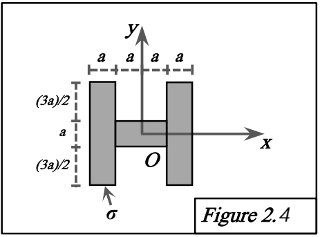

Figure 2.4 : Composé de trois rectangles (symétrique)

Méthodes requises : Additivité, Théorème de Huygens, Symétrie.
Concepts Clés :
- Additivité : $[I_O] = [I_O]_1 + [I_O]_2 + [I_O]_3$.
- Théorème de Huygens : Utilisé pour $[I_O]_1$ et $[I_O]_3$.
- Symétrie : L'ensemble est symétrique par rapport au plan $y = 0$ (plan XOZ), donc $D = I_{xy} = 0$. Le plan $z = 0$ contient l'objet ($E=F=0$). La matrice totale sera diagonale. Par symétrie, $[I_O]_1 = [I_O]_3$.
Géométrie et Décomposition :
- Rectangle 1 : Dimensions $a \times 4a$. Centre $G_1(-3a/2, 0, 0)$. Masse $M_1 = \sigma(a)(4a) = 4\sigma a^2$.
- Rectangle 2 : Dimensions $2a \times a$. Centre $G_2(0, 0, 0)$. Masse $M_2 = \sigma(2a)(a) = 2\sigma a^2$.
- Rectangle 3 : Dimensions $a \times 4a$. Centre $G_3(3a/2, 0, 0)$. Masse $M_3 = M_1 = 4\sigma a^2$.
- Masse totale : $M = M_1 + M_2 + M_3 = 10\sigma a^2$.
Calcul des tenseurs partiels en O :
Tenseur pour Rectangle 2 ($[I_O]_2$) :
Directement depuis 2.1 (largeur=2a, hauteur=a) :
$$ A_2 = M_2 \frac{a^2}{12} $$
$$ B_2 = M_2 \frac{(2a)^2}{12} = M_2 \frac{4a^2}{12} = M_2 \frac{a^2}{3} $$
$$ C_2 = A_2 + B_2 = M_2 (\frac{a^2}{12} + \frac{a^2}{3}) = M_2 \frac{a^2+4a^2}{12} = M_2 \frac{5a^2}{12} $$
$$ D_2 = E_2 = F_2 = 0 $$
$$ [I_O]_2 = \begin{pmatrix} M_2 \frac{a^2}{12} & 0 & 0 \\ 0 & M_2 \frac{a^2}{3} & 0 \\ 0 & 0 & M_2 \frac{5a^2}{12} \end{pmatrix} $$
Tenseur pour Rectangle 1 ($[I_O]_1$) : Par Huygens.
- Tenseur en $G_1$ (type 2.1, largeur=a, hauteur=4a):
$$ [I_G]_1 = \begin{pmatrix} M_1 \frac{(4a)^2}{12} & 0 & 0 \\ 0 & M_1 \frac{a^2}{12} & 0 \\ 0 & 0 & M_1 \frac{a^2+(4a)^2}{12} \end{pmatrix} = \begin{pmatrix} M_1 \frac{16a^2}{12} & 0 & 0 \\ 0 & M_1 \frac{a^2}{12} & 0 \\ 0 & 0 & M_1 \frac{17a^2}{12} \end{pmatrix} $$
- Terme de transport $[I_{O/G}]_1$ ($\vec{OG}_1 = (-3a/2, 0, 0)$):
$$ A_{O/G1} = M_1(0^2 + 0^2) = 0 $$
$$ B_{O/G1} = M_1((-3a/2)^2 + 0^2) = M_1 \frac{9a^2}{4} $$
$$ C_{O/G1} = M_1((-3a/2)^2 + 0^2) = M_1 \frac{9a^2}{4} $$
$$ D_{O/G1} = -M_1(-3a/2)(0) = 0 $$
$$ [I_{O/G}]_1 = \begin{pmatrix} 0 & 0 & 0 \\ 0 & M_1 \frac{9a^2}{4} & 0 \\ 0 & 0 & M_1 \frac{9a^2}{4} \end{pmatrix} $$
- $[I_O]_1 = [I_G]_1 + [I_{O/G}]_1$ :
$$ A_1 = M_1 \frac{16a^2}{12} + 0 = M_1 \frac{4a^2}{3} $$
$$ B_1 = M_1 \frac{a^2}{12} + M_1 \frac{9a^2}{4} = M_1 \frac{a^2+27a^2}{12} = M_1 \frac{28a^2}{12} = M_1 \frac{7a^2}{3} $$
$$ C_1 = M_1 \frac{17a^2}{12} + M_1 \frac{9a^2}{4} = M_1 \frac{17a^2+27a^2}{12} = M_1 \frac{44a^2}{12} = M_1 \frac{11a^2}{3} $$
$$ D_1 = 0 $$
$$ [I_O]_1 = \begin{pmatrix} M_1 \frac{4a^2}{3} & 0 & 0 \\ 0 & M_1 \frac{7a^2}{3} & 0 \\ 0 & 0 & M_1 \frac{11a^2}{3} \end{pmatrix} $$
Tenseur pour Rectangle 3 ($[I_O]_3$) :
Par symétrie, $[I_O]_3 = [I_O]_1$.
Calcul du tenseur total en O :
$[I_O] = [I_O]_1 + [I_O]_2 + [I_O]_3 = 2 [I_O]_1 + [I_O]_2$. Substituons $M_1 = 4\sigma a^2$ et $M_2 = 2\sigma a^2$.
$$ A = 2A_1 + A_2 = 2(4\sigma a^2)\frac{4a^2}{3} + (2\sigma a^2)\frac{a^2}{12} = \sigma a^4 (\frac{32}{3} + \frac{2}{12}) = \sigma a^4 (\frac{128+2}{12}) = \sigma a^4 \frac{130}{12} = \sigma a^4 \frac{65}{6} $$
$$ B = 2B_1 + B_2 = 2(4\sigma a^2)\frac{7a^2}{3} + (2\sigma a^2)\frac{a^2}{3} = \sigma a^4 (\frac{56}{3} + \frac{2}{3}) = \sigma a^4 \frac{58}{3} $$
$$ C = 2C_1 + C_2 = 2(4\sigma a^2)\frac{11a^2}{3} + (2\sigma a^2)\frac{5a^2}{12} = \sigma a^4 (\frac{88}{3} + \frac{10}{12}) = \sigma a^4 (\frac{352+10}{12}) = \sigma a^4 \frac{362}{12} = \sigma a^4 \frac{181}{6} $$
$$ D = 2D_1 + D_2 = 0 + 0 = 0 $$
$$ E = 0 $$
$$ F = 0 $$
Résultat :
Le tenseur d'inertie total en O est :
$$ [I_O]_{2.4} = \sigma a^4 \begin{pmatrix} \frac{65}{6} & 0 & 0 \\ 0 & \frac{58}{3} & 0 \\ 0 & 0 & \frac{181}{6} \end{pmatrix} $$
Vérification :
La matrice est diagonale comme attendu par symétrie ($D = 0$) et nature planaire ($E = F = 0$). Le théorème de l'axe perpendiculaire est vérifié : $A + B = \sigma a^4 (\frac{65}{6} + \frac{58}{3}) = \sigma a^4 (\frac{65 + 116}{6}) = \sigma a^4 \frac{181}{6} = C$.